tutor-hours-shortfall-report FAIL 0
grade probeintent info_seekingdomain educationdifficulty d4ambiguity a4voice contextfulapps files + libreoffice_calcbatch v11-500-s2
Registrar needs to know which tutors are short of their contracted hours before payroll closes. The contracts list and the term timesheets are in my Documents; leave the shortfall names, worst first, in a plain text file beside them, one per line.
task config + evaluator
{
"config": [
{
"type": "execute",
"parameters": {
"command": "mkdir -p '/home/user/Documents' && printf %s 'UEsDBBQACAgIANm0Cl0AAAAAAAAAAAAAAAALAAAAX3JlbHMvLnJlbHOtks9qwzAMh+99CqN747SFMUacXsqgtzK6B9BsJTGJ/2BrW/b2M2OwdZSwwY6Wf/r0IdTsZzeJF0rZBq9gU9UgyOtgrO8VPJ7v17ewb1fNA03IJZIHG7MoPT4rGJjjnZRZD+QwVyGSLz9dSA65PFMvI+oRe5Lbur6R6TsD2gumOBoF6Wg2IM5vkX7DDl1nNR2Cfnbk+cqIH4lCxtQTK5gn+RrS+BTCWBUoyOsu27+6mAUXR4wGGaUOidYxFUhiS/nLqnSfSjl/JJa8dv+5I5qZvCGzrIQxfhqtGnlxC+07UEsHCGu/dgTfAAAAQgIAAFBLAwQUAAgICADZtApdAAAAAAAAAAAAAAAADwAAAHhsL3dvcmtib29rLnhtbI1TTW/bMAy971cYuif+SOulQZwic2q0wL7QdO1xkG061iJLhkQ3yYb999Fy3HXYDjvYFkXy8T2SXl4fG+k9g7FCq4SF04B5oApdCrVL2JeHbDJnnkWuSi61goSdwLLr1ZvlQZt9rvXeo3xlE1Yjtgvft0UNDbdT3YIiT6VNw5FMs/Nta4CXtgbARvpREMR+w4ViA8LC/A+GripRwEYXXQMKBxADkiOxt7VoLVstKyHhcRDk8bb9yBuinXJZMH/1Qvuz8XJe7Ls2o+iEVVxaIKG1PnzKv0GBpIhLybySI6S6aalCLqTA0xj7B5ZGSqF6dNlfPAo42N/+3nTQt9qI71ohl9vCaCkThqY7lyXGKIp/ebZ9xx54bsfL45NQpT4kjGZ1enU+uOOTKLGmScaz+cV4dwtiV2PC5uFVxDzk+X3fsYTFAaVVwlh0RRwKJyXPQPV6iwT5rxS54Y1fT7nOFiTIUBKUX2vdGduTJu9dSRzc6iAFPQsrcknczUKQw9yVkcMeAUl4QSMRCMY1vFNEJuzZGag+6JIg1oR29r/M62xvQCInutMgCHtYOOJ7i+57Xi6p6fzXgkmRGxhWym0X8zojEvbjbRzF6TyOJtE6nE3C8OZy8m52cTnJbrKMWphu0qvsJ22aQ13Qkw70LRr6be6h2p5oyMdh69aOkk9Rw9sx88fdWP0CUEsHCMcBWTEGAgAAgQMAAFBLAwQUAAgICADZtApdAAAAAAAAAAAAAAAADQAAAHhsL3N0eWxlcy54bWztWF1P2zAUfd+vsPw+kpZSYEqDGKjTXia0lmnStAeTOImHPyLbhYZfz3WcpkkLTOoeVqQ+2ff4nuOTa1u1G10sBUcPVBum5AQPjkKMqExUymQ+wbfz6cczjIwlMiVcSTrBFTX4Iv4QGVtxOisotQgUpJngwtryUxCYpKCCmCNVUgkjmdKCWAh1HphSU5IaRxI8GIbhOBCESRxHciGmwhqUqIW0YKOFkG++pgCORxh5uSuVgpUvVFJNOA7iKGgE4ihTcq0zwh6II/OEHggHkdClSyKoj6/pH/JjgWZEGjeQEcF45YeGtbCnvy1yqZm30aWHe0OvG1caxnlbmiH2QByVxFqq5RQC1PTnVQn1lbDgXqbO+0t2rkk1GJ50CHUD894pncIG6y6uh1DKSK4k4bflBGeEG4pb6Fo9yhUYR5xmFoQ1ywvXWlUGTsRaJaCz4ripvXLbgekTyvnM7daf2frrQxBdZtu7S9YBHALnvel6pSYgZcmrqXIiVi9oA3yuU3rQJWe5FHQj8UYrSxNbH7YajiOySkSF0uwJpN0C5s3mdmfTssRB/nsxsnRpvytLvAp4etSknAPYFpHJtJ4Yxkyhmbyfqylrh6FMZWsDcZXc03RlsmApUDuZwTLbqFS4rtNg1zo1PjcL1YW7lVptg/djZngw84qZnc/WwczBzMHMwczBzC5mRsf79Es5GuyVm9FeuRnuk5vz/2wm6F7f/WW+c48f7HqNX2bbzrt+/tH6O7jTB00pOw+ktqxj3EGRe2pO8Df38uadyt0tGLdM+ijYJlwpIcgqf3DSIxy/SkC/wt8tadwjjV8kLbSmMqlazmmPM3qL05vrrMc7fYl3Q3UCa9BSznsU//RdFxOC9Z8k8TNQSwcIP9SAxZECAABpEQAAUEsDBBQACAgIANm0Cl0AAAAAAAAAAAAAAAAYAAAAeGwvd29ya3NoZWV0cy9zaGVldDEueG1svZdNc9s2EIbv/RUcHnJqRIr6tEMpY8tV0xkn8lROMtMbRIAiahBgAFCy/Ou7AD9DWh13piMfLGEB7j77LiW+Cj8+p8w5EKmo4At3OPBdh/BIYMr3C/fr4/r93HWURhwjJjhZuCei3I/LX8KjkE8qIUQ7kICrhZtonV17nooSkiI1EBnhsBMLmSINS7n3VCYJwvailHmB70+9FFHuFhmu5VtyiDimEbkTUZ4SroskkjCkAV8lNFNVtmf8pnxYoiO0WvG0EO+KnTrfcNzLl9JICiViPYhEWqL1u7zyrn7qM43eApYi+ZRn7yFxBs3tKKP6ZBndZWiTP0gnpkwT+VlgmEuMmCKwl6E92RL9NbP7+lE8QKDa9pahV168DDEFCc3YHUnihXszvL6dmxP2wDdKjqr13lGJOK6BL2dIVels8HdJ8T3lBKJa5mXwT3FcCfYJhIA7q73xFwHFqoCk+wQI70ms65Qa7baEkUgT3L5uk2sGRbandCdYnQCTGOVMGwQoJ2QVPwDxwuVGTgYpRWZKrAhjpk3XiczZPyD/dOw6L0Kk2wgxEGno+631F3t5N2rkvEcnkVtZIAVsms/CTognEzFpfTMj24RRN0Pmc1NCuA6C6IE0MM26uNRRP8p5NOMyidvvq8ms7Q0Dky6FABG+U6wTAz3w54E/GgaTWiYYyidiJIftYACf6xcYRhUp5ReFzvfkQBict0DtGFQo+vN+AliGoKmy/426DGXKzK9MGuVKi7QkKyaUUIwJf7WsrZmiZ6CEV8rtq9InMyEjdtngeDA2Av2/FYOyYvB6xenEzqTotfiWQBotQymOjrScReFClrpWo3gHojj9LyOw9XvtQdemnLl7lD0BFyuIHpZ+6B0MYHnitn9iWJ/wgLpGDy6MHvTAgg56+wQv0AP/dfjRheFHPfhRB37Ug786wz6+MPu4xz7usI/7wk/OwE8uDD/pwU868JMe/PQM+/TC7NMe+7TDPu0LPzwDP7sw/KwHP+vAz3rw8zPs8wuzz3vs8w77vC/8qAvvtb7uM0m53mTWczoJmBzwiY0p2jeGqBsBY1Y/joSkL4JrxFZgZIlsPbzAjWsa9Te8wt19RnJPoTCztskfzOazSemlmiXYDevmJ8Gs/oM2d0KDlK/tJNarNQliIXRr7dXOMs/A0WREbukLPB6vQLqWebKOs7Ig5bL2HK5jUmykrYPFkT8mhG+gW5impNCsdfELNxNSS0TBK+0Yip5uOP6eUF2bWAc8e8swRuCcViI1PweU8XycmLpSaePUvuTpjhRP5lyRdTfcHcVdRuFpYhqpZtBEIpFRM1Nrywq11lYjB9M4hjlxbfM3mFV4g/Fvh+Z+XoYC48IaL9+hNPuwsv/f/ciF/nBH/kbfcmdLJI1/vQVPWYTtiWFgX25Cr0lgchUY/zWX0cGx7x9swjJL6LV7g2X9Q2/5D1BLBwiDQni/PAQAACwOAABQSwMEFAAICAgA2bQKXQAAAAAAAAAAAAAAABoAAAB4bC9fcmVscy93b3JrYm9vay54bWwucmVsc62RTWvDMAyG7/0VRvfFSQdjjDi9jEGv/fgBxlHi0MQ2kta1/34uG1sKZezQk9DX875I9eo0jeqIxEMMBqqiBIXBxXYIvYH97u3hGVbNot7gaCWPsB8Sq7wT2IAXSS9as/M4WS5iwpA7XaTJSk6p18m6g+1RL8vySdOcAc0VU61bA7RuK1C7c8L/sGPXDQ5fo3ufMMgNCc1yHpEz0VKPYuArLzIH9G355T3lPyId2CPKr4OfUjZ3CdVfZh7vegtvCdutUH7s/CTz8reZRa2v3t18AlBLBwhP8Pl60gAAACUCAABQSwMEFAAICAgA2bQKXQAAAAAAAAAAAAAAABQAAAB4bC9zaGFyZWRTdHJpbmdzLnhtbI1SzUoDQQy++xRh7naqB9Gyu0WrUhCl1PYBwmzaDs4m62R2a316R0HwJHP8yPeXkGr+0QUYKaoXrs3FZGqA2EnreV+b7ebx/NqAJuQWgzDV5kRq5s1ZpZogS1lrc0ipn1mr7kAd6kR64jzZSewwZRj3VvtI2OqBKHXBXk6nV7ZDzwacDJxqc2NgYP8+0OIXN5X6pvqJmGmPLidnD6U4kmk2Q5JY2dRU9pv1D3MhnCK6RO1ShqhFmmeMXiXAmvKuRYp7GmGFiUIR+1b8juAuEjNykWIj+a7wIkd8K+Kvoj8hrLEr9H84IsOrZxfQl911iYzwlAsF93n6U8rmt2i+AFBLBwiZFPxb/wAAAFQCAABQSwMEFAAICAgA2bQKXQAAAAAAAAAAAAAAABEAAABkb2NQcm9wcy9jb3JlLnhtbG2RzU7DMBCE7zxF5HviBCSEoiSVOHCiElKpxNXY29TFf7K3Tfv2OAk1ReS2M/t5bO82q7NW2Ql8kNa0pCpKkoHhVkjTt2T7/pI/kSwgM4Ipa6AlFwhk1d013NXcenjz1oFHCSGLQSbU3LVkj+hqSgPfg2ahiISJzZ31mmGUvqeO8S/WA70vy0eqAZlgyOgYmLuUSH4iBU+R7ujVFCA4BQUaDAZaFRX9ZRG8DosHps4NqSVeHCyi12aiz0EmcBiGYniY0Pj+in6sXzfTV3NpxlFxIF0jeM09MLS+a+itiLWAwL10GEc+N/8YUStm+mOcTwcm324mJFnj5BULuI472kkQz5eYseBFy8NJjnvtyolIcrwiHD8PwHG+P4lYo0QFs30t/+26+wZQSwcILcuMlCcBAAA3AgAAUEsDBBQACAgIANm0Cl0AAAAAAAAAAAAAAAAQAAAAZG9jUHJvcHMvYXBwLnhtbJ2QTW/CMAyG7/sVVcS1TSgbIJQGbZp2QtoOHdqtyhIXMuVLSYrKv18ADTjPJ/u19dh+6Xo0ujhAiMrZBk0rggqwwklldw36bN/KJSpi4lZy7Sw06AgRrdkD/QjOQ0gKYpEJNjZon5JfYRzFHgyPVW7b3OldMDzlMuyw63sl4NWJwYBNuCZkjmFMYCXI0l+B6EJcHdJ/odKJ031x2x595jHagvGaJ2AU39LWJa5bZYCRLF8L+uy9VoKn7AjbqO8A7+cVeFHNqkVVTzbKDmP3tZx388fibqDLL/yASHhGJi+D0rKsKb6Hncjbi9Vs+lSRHOeBP43im6vsF1BLBwgZ5zXq+QAAAJoBAABQSwMEFAAICAgA2bQKXQAAAAAAAAAAAAAAABMAAABbQ29udGVudF9UeXBlc10ueG1svVQ7T8MwEN77KyKvKHbLgBBK2oHHCJUoMzLxJTGNH7Ld0v57zilUVQkpiIjJsu++l092NtuoJlmD89LonEzomCSgCyOkrnLytLhLL8lsOsoWWws+wV7tc1KHYK8Y80UNintqLGislMYpHnDrKmZ5seQVsPPx+IIVRgfQIQ2Rg0yzGyj5qgnJ7QaPd7oIJ8n1ri9K5YRb28iCByyzWGWdOAeN7wGutThyl344o4hse3wtrT/7XsHq6khAqpgsnncjXi10Q9oCYh7wup0UkMy5C/dcYQN7jkkYHThPl9KmYW/GLV+MWdL+a+9QM2UpCxCmWCmEUG8dcOFrgKAa2q5UcalP6PuwbcAPrd6S/iB5C/CsXSYDm9jzn/CxG/fhHP5p9L7mDsRjcPi+B5/AIXefD8TPnbEefwYHvzfxmTuiU4tE4ILsH/1eEan/nBriWxcgvmqPMtZ+lNN3UEsHCI/25TZZAQAAVwUAAFBLAQIUABQACAgIANm0Cl1rv3YE3wAAAEICAAALAAAAAAAAAAAAAAAAAAAAAABfcmVscy8ucmVsc1BLAQIUABQACAgIANm0Cl3HAVkxBgIAAIEDAAAPAAAAAAAAAAAAAAAAABgBAAB4bC93b3JrYm9vay54bWxQSwECFAAUAAgICADZtApdP9SAxZECAABpEQAADQAAAAAAAAAAAAAAAABbAwAAeGwvc3R5bGVzLnhtbFBLAQIUABQACAgIANm0Cl2DQni/PAQAACwOAAAYAAAAAAAAAAAAAAAAACcGAAB4bC93b3Jrc2hlZXRzL3NoZWV0MS54bWxQSwECFAAUAAgICADZtApdT/D5etIAAAAlAgAAGgAAAAAAAAAAAAAAAACpCgAAeGwvX3JlbHMvd29ya2Jvb2sueG1sLnJlbHNQSwECFAAUAAgICADZtApdmRT8W/8AAABUAgAAFAAAAAAAAAAAAAAAAADDCwAAeGwvc2hhcmVkU3RyaW5ncy54bWxQSwECFAAUAAgICADZtApdLcuMlCcBAAA3AgAAEQAAAAAAAAAAAAAAAAAEDQAAZG9jUHJvcHMvY29yZS54bWxQSwECFAAUAAgICADZtApdGec16vkAAACaAQAAEAAAAAAAAAAAAAAAAABqDgAAZG9jUHJvcHMvYXBwLnhtbFBLAQIUABQACAgIANm0Cl2P9uU2WQEAAFcFAAATAAAAAAAAAAAAAAAAAKEPAABbQ29udGVudF9UeXBlc10ueG1sUEsFBgAAAAAJAAkAPwIAADsRAAAAAA==' | base64 -d > '/home/user/Documents/contracted_hours.xlsx' && printf %s 'V2VlayAxOiBNYXJpc29sIFJleWVzIDMwOyBEZXYgUGF0ZWwgMjQ7IEFvaWZlIEJyZW5uYW4gNDA7IFRvbWFzIE5vd2FrIDE1OyBQcml5YSBSYW1hbiAyNjsgRXdhbiBTaW5jbGFpciAyMjsgSGFuYSBLb3dhbGN6eWsgMzQKV2VlayAyOiBNYXJpc29sIFJleWVzIDI4OyBEZXYgUGF0ZWwgMjI7IEFvaWZlIEJyZW5uYW4gMzg7IFRvbWFzIE5vd2FrIDE2OyBQcml5YSBSYW1hbiAyNTsgRXdhbiBTaW5jbGFpciAyMTsgSGFuYSBLb3dhbGN6eWsgMzMKV2VlayAzOiBNYXJpc29sIFJleWVzIDI3OyBEZXYgUGF0ZWwgMjM7IEFvaWZlIEJyZW5uYW4gMzY7IFRvbWFzIE5vd2FrIDE0OyBQcml5YSBSYW1hbiAyNDsgRXdhbiBTaW5jbGFpciAyMDsgSGFuYSBLb3dhbGN6eWsgMzIKV2VlayA0OiBNYXJpc29sIFJleWVzIDI2OyBEZXYgUGF0ZWwgMjU7IEFvaWZlIEJyZW5uYW4gMzA7IFRvbWFzIE5vd2FrIDE2OyBQcml5YSBSYW1hbiAyMDsgRXdhbiBTaW5jbGFpciAxOTsgSGFuYSBLb3dhbGN6eWsgMzEK' | base64 -d > '/home/user/Documents/term_timesheets.txt'",
"shell": true
}
}
],
"evaluator": {
"func": "check_include_exclude",
"result": {
"type": "vm_command_line",
"command": [
"python3",
"-c",
"import sys, traceback\ndef _main():\n import glob, os, sys\n expected = [\"Aoife Brennan\", \"Priya Raman\", \"Hana Kowalczyk\", \"Marisol Reyes\"]\n cands = [p for p in glob.glob(\"/home/user/Documents/*.txt\") if os.path.basename(p) != \"term_timesheets.txt\"]\n hit = None\n for p in cands:\n lines = [l.strip() for l in open(p, errors=\"ignore\").read().splitlines() if l.strip()]\n if [l.lower() for l in lines] == [e.lower() for e in expected]:\n hit = p\n break\n if hit is None:\n print(\"no txt in Documents holds the 4 shortfall tutors in descending shortfall order; found %r\" % cands, file=sys.stderr)\n print(\"PASS\" if hit else \"FAIL\")\n\ntry:\n _main()\nexcept Exception:\n traceback.print_exc(file=sys.stderr)\n print(\"FAIL\")\n"
]
},
"expected": {
"type": "rule",
"rules": {
"include": [
"PASS"
],
"exclude": [
"FAIL"
]
}
}
}
}
step 1 16:17:27
THINKINGI need to explore the Documents folder to find the contracts list and term timesheets. Let me open the file manager to see what files are there. First, let me take a screenshot to see the current state, then open the Files application.
ACTIONI'll start by opening the Files application to look at the Documents folder and understand what files I'm working with.
TOOL CALL<tool_call>
<function=computer_use>
<parameter=action>
left_click
</parameter>
<parameter=coordinate>
[17, 560]
</parameter>
</function>
</tool_call>
EXECUTED (pyautogui in VM)pyautogui.click(32, 605)
step 2 16:17:42
THINKINGThe Files app is open showing the Home directory. I need to navigate to Documents. Rather than clicking through the GUI which would be slow for reading file contents, I should use a terminal to inspect the files efficiently. But first let me look at what's in Documents. Let me open a terminal to explore the files efficiently. I'll use the Files app to navigate to Documents first, but actually a terminal will be far more efficient for reading and processing data. Let me open a terminal application.
Let me navigate to Documents first to see the files.
ACTIONThe Files app is open. Let me navigate into the Documents folder to see what files are present.
TOOL CALL<tool_call>
<function=computer_use>
<parameter=action>
double_click
</parameter>
<parameter=coordinate>
[229, 256]
</parameter>
</function>
</tool_call>
EXECUTED (pyautogui in VM)pyautogui.doubleClick(440, 276)
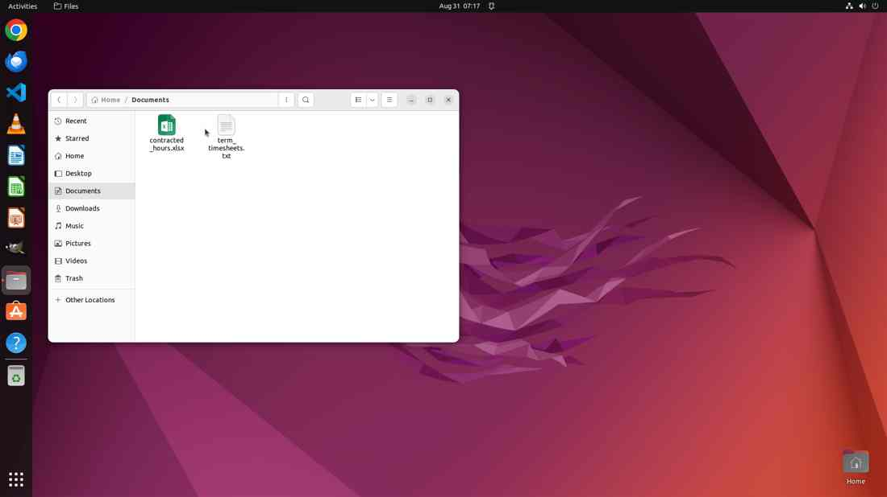
step 3 16:17:55
THINKINGTwo files: contracted_hours.xlsx (contracts list) and term_timesheets.txt (timesheets). I need to read both. The xlsx needs conversion to text. Let me open a terminal to inspect efficiently. I'll launch a terminal application. Let me use the Files "Open Terminal" or find a terminal. I'll open a terminal via the applications grid, or I could use xterm. Let me check if there's a terminal. I'll open one via keyboard - but there's no guarantee. Let me use the Activities to search for terminal.
Actually, the most reliable is to open a terminal app. Let me click Activities and search "terminal".
ACTIONI can see the two files: `contracted_hours.xlsx` (contracts) and `term_timesheets.txt` (timesheets). I'll open a terminal to inspect and process these files efficiently.
TOOL CALL<tool_call>
<function=computer_use>
<parameter=action>
left_click
</parameter>
<parameter=coordinate>
[25, 10]
</parameter>
</function>
</tool_call>
EXECUTED (pyautogui in VM)pyautogui.click(48, 10)
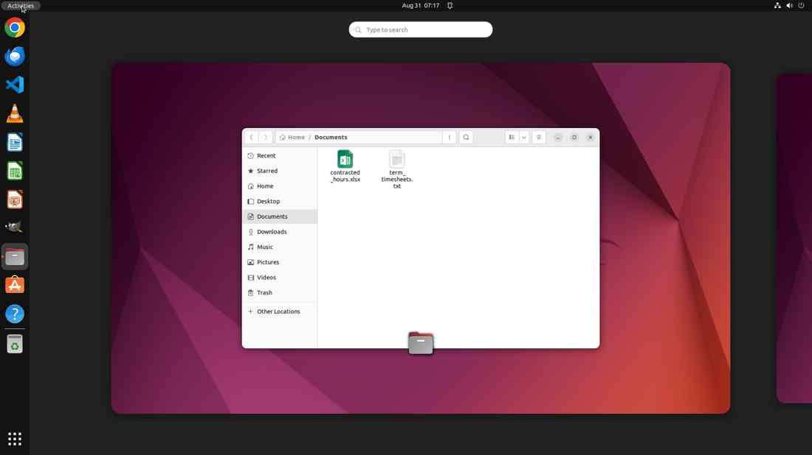
step 4 16:18:05
THINKINGThe Activities overview is open with a search box. Let me search for "terminal" to launch a terminal application.
TOOL CALL<tool_call>
<function=computer_use>
<parameter=action>
type
</parameter>
<parameter=text>
terminal
</parameter>
</function>
</tool_call>
EXECUTED (pyautogui in VM)pyautogui.typewrite("terminal")
step 5 16:18:14
THINKINGThe Terminal app appears. Let me click it to launch.
TOOL CALL<tool_call>
<function=computer_use>
<parameter=action>
left_click
</parameter>
<parameter=coordinate>
[517, 163]
</parameter>
</function>
</tool_call>
EXECUTED (pyautogui in VM)pyautogui.click(993, 176)
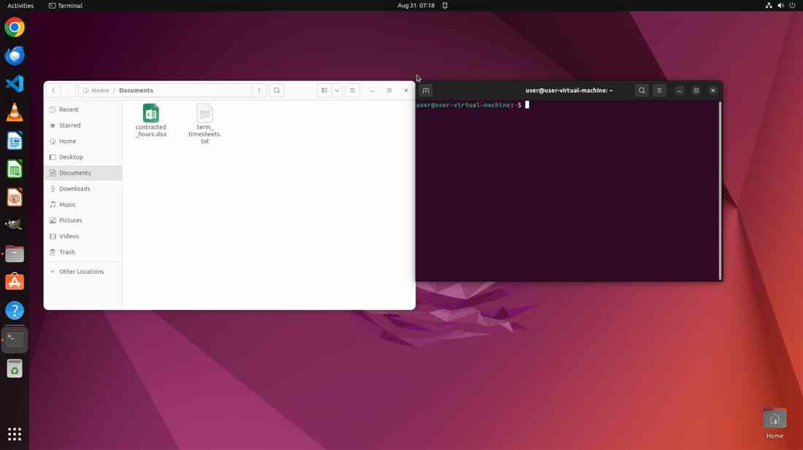
step 6 16:18:22
THINKINGTerminal is open. Let me first look at the timesheets text file, and inspect the xlsx. The xlsx is a zip; I can extract the sharedStrings and sheet data, but easier to use python if available. Let me check both. First cat the timesheets.
ACTIONTerminal is open. Let me inspect the timesheets file and check for tools to read the xlsx.
TOOL CALL<tool_call>
<function=computer_use>
<parameter=action>
left_click
</parameter>
<parameter=coordinate>
[702, 416]
</parameter>
</function>
</tool_call>
EXECUTED (pyautogui in VM)pyautogui.click(1349, 449)
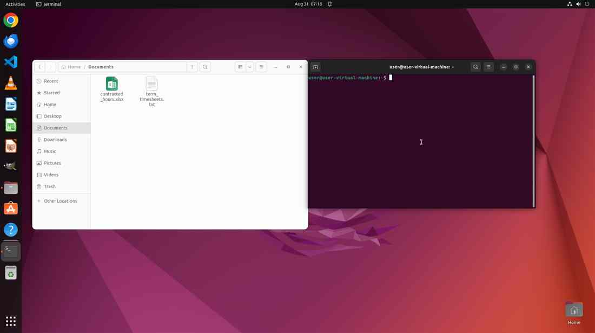
step 7 16:18:31
THINKINGLet me cat the timesheets file first to understand its structure.
TOOL CALL<tool_call>
<function=computer_use>
<parameter=action>
type
</parameter>
<parameter=text>
cat ~/Documents/term_timesheets.txt
</parameter>
</function>
</tool_call>
EXECUTED (pyautogui in VM)pyautogui.typewrite("cat ~/Documents/term_timesheets.txt")
step 8 16:18:44
THINKINGThe terminal window is a bit small. Let me maximize it first so I can read output better, then run the command. Actually let me just press Enter and see the output. But the window is small; the file might be long. Let me maximize the terminal first. I'll press Enter to run then maximize.
ACTIONLet me maximize the terminal for better readability, then run the command.
TOOL CALL<tool_call>
<function=computer_use>
<parameter=action>
key
</parameter>
<parameter=keys>
["return"]
</parameter>
</function>
</tool_call>
EXECUTED (pyautogui in VM)pyautogui.press("return")
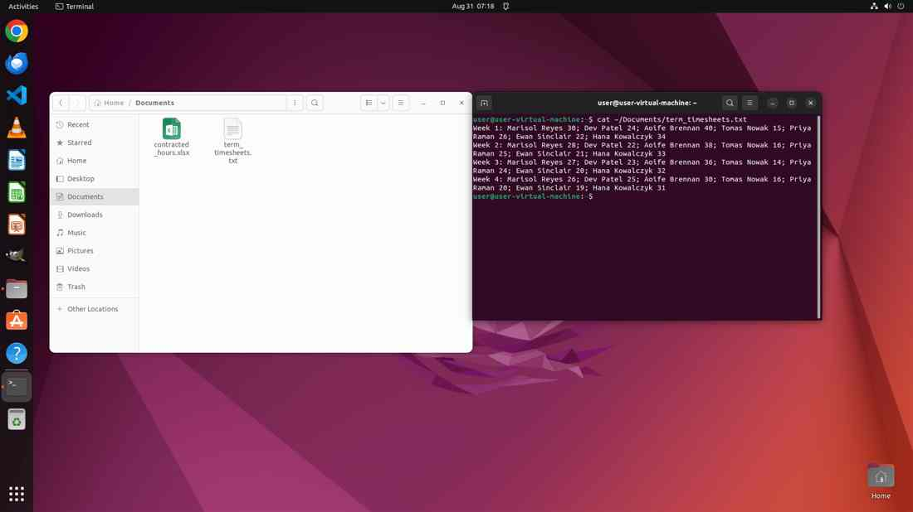
step 9 16:19:03
THINKINGI can read the timesheets. Let me record the data carefully. Each week lists tutors with hours:
Week 1: Marisol Reyes 30; Dev Patel 24; Aoife Brennan 40; Tomas Nowak 15; Priya Raman 26; Ewan Sinclair 22; Hana Kowalczyk 34
Week 2: Marisol Reyes 28; Dev Patel 22; Aoife Brennan 38; Tomas Nowak 16; Priya Raman 25; Ewan Sinclair 21; Hana Kowalczyk 33
Week 3: Marisol Reyes 27; Dev Patel 23; Aoife Brennan 36; Tomas Nowak 14; Priya Raman 24; Ewan Sinclair 20; Hana Kowalczyk 32
Week 4: Marisol Reyes 26; Dev Patel 25; Aoife Brennan 30; Tomas Nowak 16; Priya Raman 20; Ewan Sinclair 19; Hana Kowalczyk 31
But rather than rely on my reading, I should compute totals programmatically to be accurate. Let me write a script. But first I need the contracted hours from the xlsx. Let me read that. I'll use python3 with openpyxl if available, otherwise parse. Let me try python3.
Actually, to be safe and accurate, let me do the whole computation in a script. First check python3 and openpyxl.
ACTIONI can read the timesheets. Now I need the contracted hours from the xlsx. Let me check for Python tools to parse it reliably.
TOOL CALL<tool_call>
<function=computer_use>
<parameter=action>
type
</parameter>
<parameter=text>
python3 -c "import openpyxl; print('ok')"
</parameter>
</function>
</tool_call>
EXECUTED (pyautogui in VM)pyautogui.typewrite("python3 -c \"import openpyxl; print('ok')\"")

step 10 16:19:20
THINKINGThe output isn't visible yet - the prompt shows the command but no result visible. Let me scroll or wait. The command may have printed "ok" but it's not showing. Let me take a screenshot to confirm.
TOOL CALL<tool_call>
<function=computer_use>
<parameter=action>
screenshot
</parameter>
</function>
</tool_call>
EXECUTED (pyautogui in VM)WAIT
step 11 16:19:36
THINKINGThe command line shows but no output below it - the prompt hasn't returned, meaning the command may still be running, or it printed "ok" but it's not visible. Actually there's no new prompt line, which is odd. Maybe the terminal is still executing. Let me press Enter again to get a fresh prompt and check.
Actually wait - the previous Enter already executed. There should be a result. It seems the output might be blank or the import failed silently. Let me just proceed with a full script that reads the xlsx directly using openpyxl, and if that fails I'll fall back. Let me write a comprehensive script. But I'm not 100% sure openpyxl is available. Let me test more clearly.
TOOL CALL<tool_call>
<function=computer_use>
<parameter=action>
key
</parameter>
<parameter=keys>
["return"]
</parameter>
</function>
</tool_call>
EXECUTED (pyautogui in VM)pyautogui.press("return")
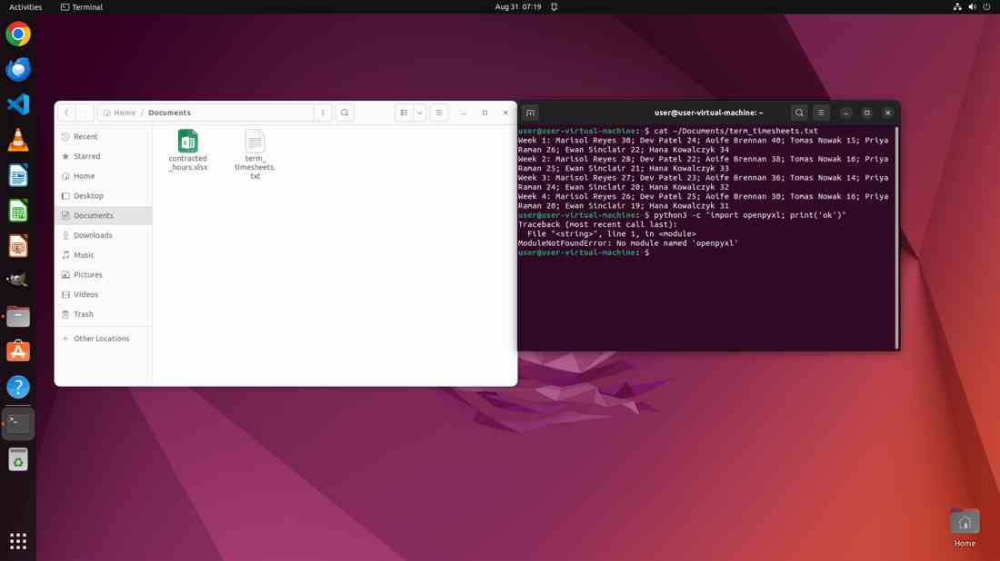
step 12 16:19:46
THINKINGopenpyxl is not installed. I can parse xlsx manually since it's a zip. I'll extract and read the sharedStrings.xml and sheet1.xml. Let me unzip to a temp dir and cat the XML. Let me do that.
ACTIONopenpyxl isn't available. Since xlsx is a zip, I'll extract its XML to read the contract data.
TOOL CALL<tool_call>
<function=computer_use>
<parameter=action>
type
</parameter>
<parameter=text>
cd /tmp && rm -rf x && mkdir x && cd x && unzip -o ~/Documents/contracted_hours.xlsx >/dev/null && ls -R
</parameter>
</function>
</tool_call>
EXECUTED (pyautogui in VM)pyautogui.typewrite("cd /tmp && rm -rf x && mkdir x && cd x && unzip -o ~/Documents/contracted_hours.xlsx >/dev/null && ls -R")
step 13 16:19:55
THINKINGThe command is typed but not yet run - I need to press Enter.
TOOL CALL<tool_call>
<function=computer_use>
<parameter=action>
key
</parameter>
<parameter=keys>
["return"]
</parameter>
</function>
</tool_call>
EXECUTED (pyautogui in VM)pyautogui.press("return")
step 14 16:20:11
THINKINGUnzipped successfully. Now I'll parse with a Python script that reads sharedStrings.xml and sheet1.xml to map names to contracted hours. Let me write a python script that does the whole computation: parse the xlsx, parse the timesheets, compute shortfalls, sort worst first, write to file. This is the most reliable approach.
Let me write the script to a file and run it. I'll create /tmp/calc.py.
The xlsx: sharedStrings holds strings in order. sheet1.xml has <c r="A1" t="s"><v>0</v></c> referencing shared string index, or numeric <c r="B2"><v>120</v></c>.
Let me write a robust parser. I'll use xml parsing. Actually let me just view the sheet1.xml and sharedStrings.xml to understand structure first.
ACTIONThe xlsx extracted cleanly. Let me view the sheet data and shared strings to understand the structure.
TOOL CALL<tool_call>
<function=computer_use>
<parameter=action>
type
</parameter>
<parameter=text>
echo "=== SHARED ==="; cat xl/sharedStrings.xml; echo; echo "=== SHEET ==="; cat xl/worksheets/sheet1.xml
</parameter>
</function>
</tool_call>
EXECUTED (pyautogui in VM)pyautogui.typewrite("echo \"=== SHARED ===\"; cat xl/sharedStrings.xml; echo; echo \"=== SHEET ===\"; cat xl/worksheets/sheet1.xml")
step 15 16:20:20
THINKINGThe command is typed but not yet executed (no output). I need to press Enter. The terminal window is small though - output may scroll. Let me maximize the terminal first would be nice but the command is already typed. Let me just press Enter and read.
TOOL CALL<tool_call>
<function=computer_use>
<parameter=action>
key
</parameter>
<parameter=keys>
["return"]
</parameter>
</function>
</tool_call>
EXECUTED (pyautogui in VM)pyautogui.press("return")
step 16.1 16:20:48
THINKINGThe XML is dense and hard to read in this small window. I can see the sheet structure: cells with t="s" reference shared strings (the name column A), and t="n" numeric values (the hours column B). Row 4 A4 t=s v=4, B4 t=n v=150; row 5 A5 t=s v=5, B5=60; A6 t=s v=6, B6=110; A7 t=s v=7, B7=80; A8 t=s v=8, B8=130. And the header row 3 A3, B3.
Rather than parse by eye, I'll write a Python script that properly maps. This avoids errors. Let me write a full script. I'll create it with a heredoc. Let me write the whole computation in one script that:
1. Reads sharedStrings into a list.
2. Parses sheet1.xml rows/cells.
3. Builds name->contracted_hours dict (column A = name, column B = hours), skipping header.
4. Parses timesheets: accumulate hours per tutor.
5. Compute shortfall = contracted - actual; if >0, include.
6. Sort by shortfall descending (worst first).
7. Write names one per line to ~/Documents/shortfall.txt.
Let me write this via a heredoc.
ACTIONThe XML is dense. To avoid transcription errors, I'll write a Python script that parses both files, computes shortfalls, sorts worst-first, and writes the result. Let me create the script.
TOOL CALL<tool_call>
<function=computer_use>
<parameter=action>
type
</parameter>
<parameter=text>
cat > /tmp/calc.py << 'EOF'
import re, xml.etree.ElementTree as ET
ns='{http://schemas.openxmlformats.org/spreadsheetml/2006/main}'
# shared strings
sst=[]
try:
root=ET.parse('/tmp/x/xl/sharedStrings.xml').getroot()
for si in root.findall(ns+'si'):
txt=''.join(t.text or '' for t in si.iter(ns+'t'))
sst.append(txt)
except FileNotFoundError:
pass
# sheet
data={}
sroot=ET.parse('/tmp/x/xl/worksheets/sheet1.xml').getroot()
def col(r):
return re.match(r'[A-Z]+',r).group()
for row in sroot.iter(ns+'row'):
for c in row.findall(ns+'c'):
ref=c.get('r'); rtype=c.get('t')
v=c.find(ns+'v')
if v is None:
is_=c.find(ns+'is')
if is_ is not None:
val=''.join(t.text or '' for t in is_.iter(ns+'t'))
else: continue
else:
val=v.text
if rtype=='s':
val=sst[int(val)]
data[(ref[0],col(ref))]=val
# build contracts: find name column and hours column per row
rows={}
for (num,cc),val in data.items():
rows.setdefault(int(num),{})[cc]=val
contract={}
for rn in sorted(rows):
d=rows[rn]
cols=set(d)
# name = a text col, hours = numeric col
name=None;hrs=None
for cc,vv in d.items():
if re.fullmatch(r'\d+(\.\d+)?',str(vv)):
hrs=float(vv)
else:
name=vv
if name is not None and hrs is not None:
contract[name]=hrs
print('CONTRACTS:',contract)
# timesheets
actual={}
for line in open('/home/user/Documents/term_timesheets.txt'):
for m in re.finditer(r'([^;:]+?)\s+(\d+(?:\.\d+)?)\s*;',line):
name=m.group(1).strip();hrs=float(m.group(2))
if name.lower()=='week' or ':' in name:
name=name.split(':',1)[0].strip() if ':' in name else name
actual[name]=actual.get(name,0)+hrs
print('ACTUAL:',actual)
short={}
for name,c in contract.items():
a=actual.get(name,0)
d=c-a
if d>0:
short[name]=d
print('SHORTFALLS:',short)
order=sorted(short.items(), key=lambda kv:(-kv[1], kv[0]))
with open('/home/user/Documents/shortfall.txt','w') as f:
for name,_ in order:
f.write(name+'\n')
print('WROTE')
EOF
python3 /tmp/calc.py
</parameter>
</function>
</tool_call>
EXECUTED (pyautogui in VM)pyautogui.typewrite("cat > /tmp/calc.py << 'EOF'")
step 16.2 16:20:51
EXECUTED (pyautogui in VM)pyautogui.press("enter")
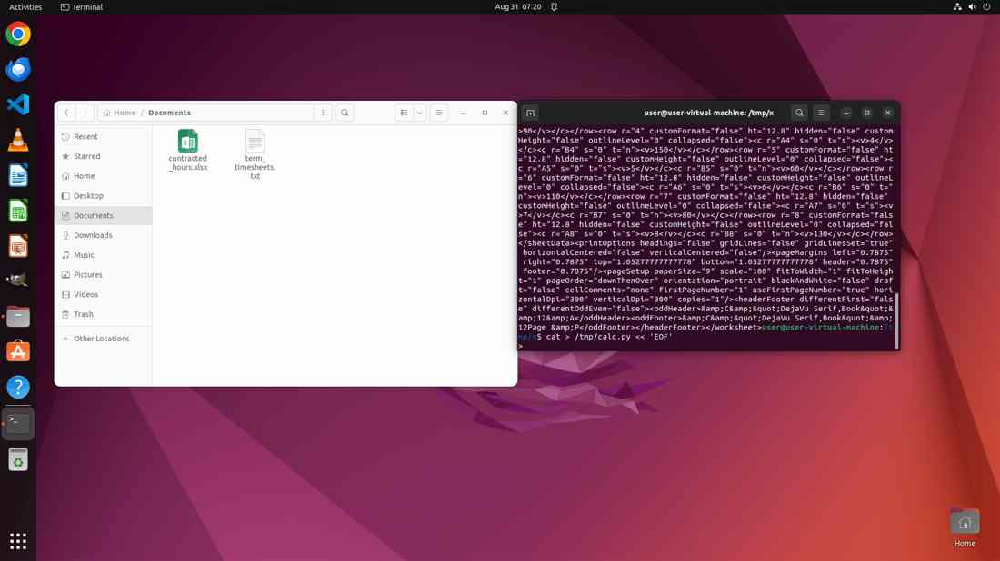
step 16.3 16:20:55
EXECUTED (pyautogui in VM)pyautogui.typewrite("import re, xml.etree.ElementTree as ET")
step 16.4 16:20:58
EXECUTED (pyautogui in VM)pyautogui.press("enter")
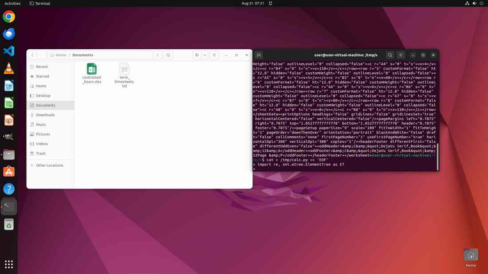
step 16.5 16:21:02
EXECUTED (pyautogui in VM)pyautogui.press("enter")
step 16.6 16:21:05
EXECUTED (pyautogui in VM)pyautogui.typewrite("ns='{http://schemas.openxmlformats.org/spreadsheetml/2006/main}'")
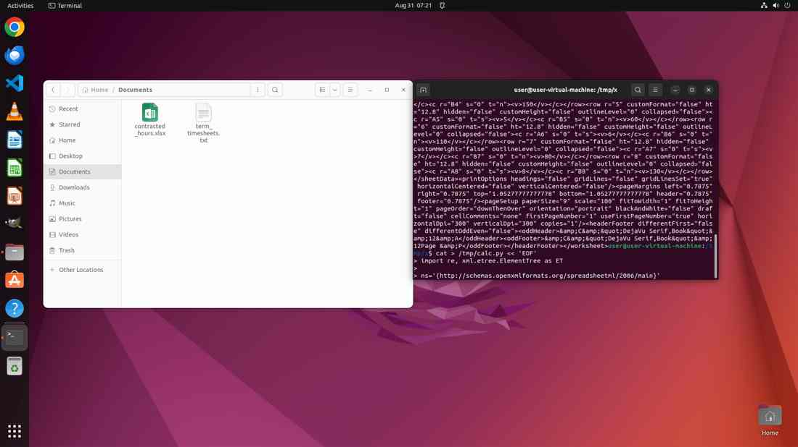
step 16.7 16:21:09
EXECUTED (pyautogui in VM)pyautogui.press("enter")
step 16.8 16:21:20
EXECUTED (pyautogui in VM)pyautogui.typewrite("# shared strings")
step 16.9 16:21:24
EXECUTED (pyautogui in VM)pyautogui.press("enter")
step 16.10 16:21:27
EXECUTED (pyautogui in VM)pyautogui.typewrite("sst=[]")
step 16.11 16:21:31
EXECUTED (pyautogui in VM)pyautogui.press("enter")
step 16.12 16:21:34
EXECUTED (pyautogui in VM)pyautogui.typewrite("try:")
step 16.13 16:21:38
EXECUTED (pyautogui in VM)pyautogui.press("enter")
step 16.14 16:21:41
EXECUTED (pyautogui in VM)pyautogui.typewrite(" root=ET.parse('/tmp/x/xl/sharedStrings.xml').getroot()")
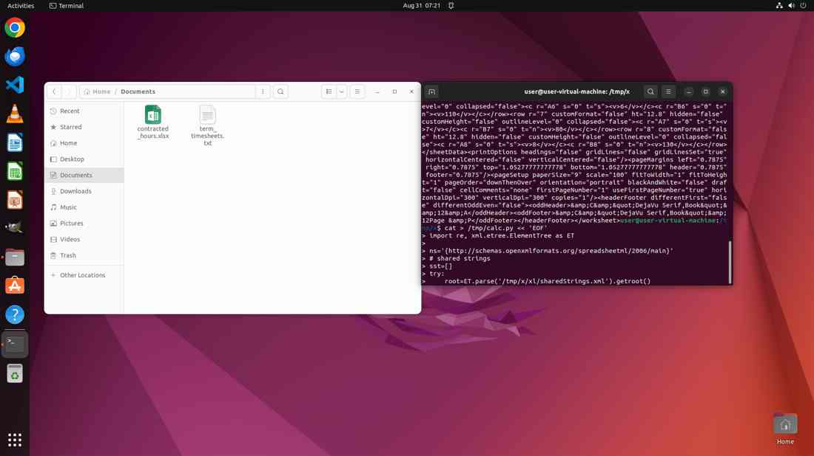
step 16.15 16:21:45
EXECUTED (pyautogui in VM)pyautogui.press("enter")
step 16.16 16:21:48
EXECUTED (pyautogui in VM)pyautogui.typewrite(" for si in root.findall(ns+'si'):")
step 16.17 16:21:52
EXECUTED (pyautogui in VM)pyautogui.press("enter")
step 16.18 16:21:55
EXECUTED (pyautogui in VM)pyautogui.typewrite(" txt=''.join(t.text or '' for t in si.iter(ns+'t'))")
step 16.19 16:21:59
EXECUTED (pyautogui in VM)pyautogui.press("enter")
step 16.20 16:22:02
EXECUTED (pyautogui in VM)pyautogui.typewrite(" sst.append(txt)")
step 16.21 16:22:06
EXECUTED (pyautogui in VM)pyautogui.press("enter")
step 16.22 16:22:09
EXECUTED (pyautogui in VM)pyautogui.typewrite("except FileNotFoundError:")
step 16.23 16:22:13
EXECUTED (pyautogui in VM)pyautogui.press("enter")
step 16.24 16:22:16
EXECUTED (pyautogui in VM)pyautogui.typewrite(" pass")
step 16.25 16:22:20
EXECUTED (pyautogui in VM)pyautogui.press("enter")
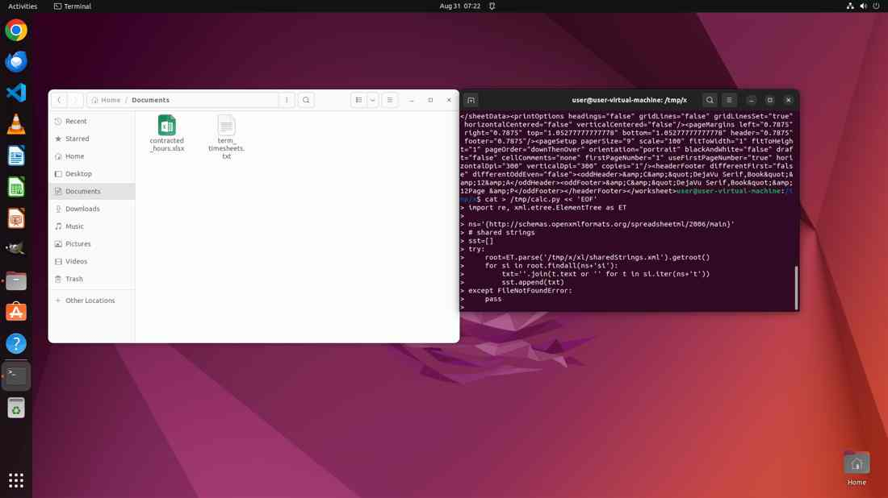
step 16.26 16:22:23
EXECUTED (pyautogui in VM)pyautogui.press("enter")
step 16.27 16:22:27
EXECUTED (pyautogui in VM)pyautogui.typewrite("# sheet")
step 16.28 16:22:30
EXECUTED (pyautogui in VM)pyautogui.press("enter")
step 16.29 16:22:34
EXECUTED (pyautogui in VM)pyautogui.typewrite("data={}")
step 16.30 16:22:37
EXECUTED (pyautogui in VM)pyautogui.press("enter")
step 16.31 16:22:41
EXECUTED (pyautogui in VM)pyautogui.typewrite("sroot=ET.parse('/tmp/x/xl/worksheets/sheet1.xml').getroot()")
step 16.32 16:22:44
EXECUTED (pyautogui in VM)pyautogui.press("enter")
step 16.33 16:22:48
EXECUTED (pyautogui in VM)pyautogui.typewrite("def col(r):")
step 16.34 16:22:51
EXECUTED (pyautogui in VM)pyautogui.press("enter")
step 16.35 16:22:55
EXECUTED (pyautogui in VM)pyautogui.typewrite(" return re.match(r'[A-Z]+',r).group()")
step 16.36 16:22:58
EXECUTED (pyautogui in VM)pyautogui.press("enter")
step 16.37 16:23:02
EXECUTED (pyautogui in VM)pyautogui.typewrite("for row in sroot.iter(ns+'row'):")
step 16.38 16:23:05
EXECUTED (pyautogui in VM)pyautogui.press("enter")
step 16.39 16:23:09
EXECUTED (pyautogui in VM)pyautogui.typewrite(" for c in row.findall(ns+'c'):")
step 16.40 16:23:12
EXECUTED (pyautogui in VM)pyautogui.press("enter")
step 16.41 16:23:16
EXECUTED (pyautogui in VM)pyautogui.typewrite(" ref=c.get('r'); rtype=c.get('t')")
step 16.42 16:23:20
EXECUTED (pyautogui in VM)pyautogui.press("enter")
step 16.43 16:23:23
EXECUTED (pyautogui in VM)pyautogui.typewrite(" v=c.find(ns+'v')")
step 16.44 16:23:27
EXECUTED (pyautogui in VM)pyautogui.press("enter")
step 16.45 16:23:30
EXECUTED (pyautogui in VM)pyautogui.typewrite(" if v is None: ")
step 16.46 16:23:34
EXECUTED (pyautogui in VM)pyautogui.press("enter")
step 16.47 16:23:37
EXECUTED (pyautogui in VM)pyautogui.typewrite(" is_=c.find(ns+'is')")
step 16.48 16:23:41
EXECUTED (pyautogui in VM)pyautogui.press("enter")
step 16.49 16:23:44
EXECUTED (pyautogui in VM)pyautogui.typewrite(" if is_ is not None:")
step 16.50 16:23:48
EXECUTED (pyautogui in VM)pyautogui.press("enter")
step 16.51 16:23:51
EXECUTED (pyautogui in VM)pyautogui.typewrite(" val=''.join(t.text or '' for t in is_.iter(ns+'t'))")
step 16.52 16:23:55
EXECUTED (pyautogui in VM)pyautogui.press("enter")
step 16.53 16:23:58
EXECUTED (pyautogui in VM)pyautogui.typewrite(" else: continue")
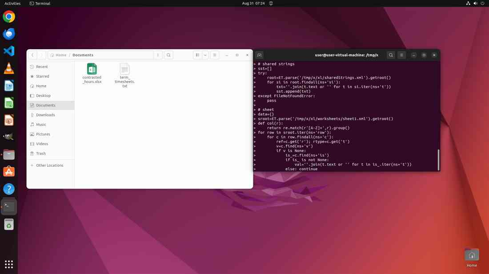
step 16.54 16:24:02
EXECUTED (pyautogui in VM)pyautogui.press("enter")
step 16.55 16:24:05
EXECUTED (pyautogui in VM)pyautogui.typewrite(" else:")
step 16.56 16:24:09
EXECUTED (pyautogui in VM)pyautogui.press("enter")
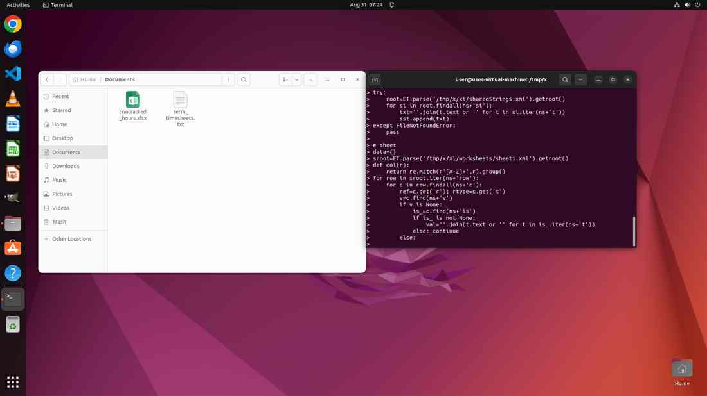
step 16.57 16:24:12
EXECUTED (pyautogui in VM)pyautogui.typewrite(" val=v.text")
step 16.58 16:24:16
EXECUTED (pyautogui in VM)pyautogui.press("enter")
step 16.59 16:24:20
EXECUTED (pyautogui in VM)pyautogui.typewrite(" if rtype=='s':")
step 16.60 16:24:23
EXECUTED (pyautogui in VM)pyautogui.press("enter")
step 16.61 16:24:27
EXECUTED (pyautogui in VM)pyautogui.typewrite(" val=sst[int(val)]")
step 16.62 16:24:30
EXECUTED (pyautogui in VM)pyautogui.press("enter")
step 16.63 16:24:34
EXECUTED (pyautogui in VM)pyautogui.typewrite(" data[(ref[0],col(ref))]=val")
step 16.64 16:24:37
EXECUTED (pyautogui in VM)pyautogui.press("enter")
step 16.65 16:24:41
EXECUTED (pyautogui in VM)pyautogui.press("enter")
step 16.66 16:24:44
EXECUTED (pyautogui in VM)pyautogui.typewrite("# build contracts: find name column and hours column per row")
step 16.67 16:24:48
EXECUTED (pyautogui in VM)pyautogui.press("enter")
step 16.68 16:24:51
EXECUTED (pyautogui in VM)pyautogui.typewrite("rows={}")
step 16.69 16:24:55
EXECUTED (pyautogui in VM)pyautogui.press("enter")
step 16.70 16:24:58
EXECUTED (pyautogui in VM)pyautogui.typewrite("for (num,cc),val in data.items():")
step 16.71 16:25:02
EXECUTED (pyautogui in VM)pyautogui.press("enter")
step 16.72 16:25:05
EXECUTED (pyautogui in VM)pyautogui.typewrite(" rows.setdefault(int(num),{})[cc]=val")
step 16.73 16:25:09
EXECUTED (pyautogui in VM)pyautogui.press("enter")
step 16.74 16:25:12
EXECUTED (pyautogui in VM)pyautogui.typewrite("contract={}")
step 16.75 16:25:16
EXECUTED (pyautogui in VM)pyautogui.press("enter")
step 16.76 16:25:19
EXECUTED (pyautogui in VM)pyautogui.typewrite("for rn in sorted(rows):")
step 16.77 16:25:23
EXECUTED (pyautogui in VM)pyautogui.press("enter")
step 16.78 16:25:27
EXECUTED (pyautogui in VM)pyautogui.typewrite(" d=rows[rn]")
step 16.79 16:25:30
EXECUTED (pyautogui in VM)pyautogui.press("enter")
step 16.80 16:25:34
EXECUTED (pyautogui in VM)pyautogui.typewrite(" cols=set(d)")
step 16.81 16:25:38
EXECUTED (pyautogui in VM)pyautogui.press("enter")
step 16.82 16:25:42
EXECUTED (pyautogui in VM)pyautogui.typewrite(" # name = a text col, hours = numeric col")
step 16.83 16:25:45
EXECUTED (pyautogui in VM)pyautogui.press("enter")
step 16.84 16:25:49
EXECUTED (pyautogui in VM)pyautogui.typewrite(" name=None;hrs=None")
step 16.85 16:25:52
EXECUTED (pyautogui in VM)pyautogui.press("enter")
step 16.86 16:25:56
EXECUTED (pyautogui in VM)pyautogui.typewrite(" for cc,vv in d.items():")
step 16.87 16:26:00
EXECUTED (pyautogui in VM)pyautogui.press("enter")
step 16.88 16:26:03
EXECUTED (pyautogui in VM)pyautogui.typewrite(" if re.fullmatch(r'\\d+(\\.\\d+)?',str(vv)):")
step 16.89 16:26:07
EXECUTED (pyautogui in VM)pyautogui.press("enter")
step 16.90 16:26:10
EXECUTED (pyautogui in VM)pyautogui.typewrite(" hrs=float(vv)")
step 16.91 16:26:14
EXECUTED (pyautogui in VM)pyautogui.press("enter")
step 16.92 16:26:22
EXECUTED (pyautogui in VM)pyautogui.typewrite(" else:")
step 16.93 16:26:28
EXECUTED (pyautogui in VM)pyautogui.press("enter")
step 16.94 16:26:31
EXECUTED (pyautogui in VM)pyautogui.typewrite(" name=vv")
step 16.95 16:26:35
EXECUTED (pyautogui in VM)pyautogui.press("enter")
step 16.96 16:26:38
EXECUTED (pyautogui in VM)pyautogui.typewrite(" if name is not None and hrs is not None:")
step 16.97 16:26:42
EXECUTED (pyautogui in VM)pyautogui.press("enter")
step 16.98 16:26:45
EXECUTED (pyautogui in VM)pyautogui.typewrite(" contract[name]=hrs")
step 16.99 16:26:49
EXECUTED (pyautogui in VM)pyautogui.press("enter")
step 16.100 16:26:52
EXECUTED (pyautogui in VM)pyautogui.typewrite("print('CONTRACTS:',contract)")
step 16.101 16:26:56
EXECUTED (pyautogui in VM)pyautogui.press("enter")
step 16.102 16:26:59
EXECUTED (pyautogui in VM)pyautogui.press("enter")
step 16.103 16:27:03
EXECUTED (pyautogui in VM)pyautogui.typewrite("# timesheets")
step 16.104 16:27:06
EXECUTED (pyautogui in VM)pyautogui.press("enter")
step 16.105 16:27:10
EXECUTED (pyautogui in VM)pyautogui.typewrite("actual={}")
step 16.106 16:27:14
EXECUTED (pyautogui in VM)pyautogui.press("enter")
step 16.107 16:27:17
EXECUTED (pyautogui in VM)pyautogui.typewrite("for line in open('/home/user/Documents/term_timesheets.txt'):")
step 16.108 16:27:21
EXECUTED (pyautogui in VM)pyautogui.press("enter")
step 16.109 16:27:24
EXECUTED (pyautogui in VM)pyautogui.typewrite(" for m in re.finditer(r'([^;:]+?)\\s+(\\d+(?:\\.\\d+)?)\\s*;',line):")
step 16.110 16:27:28
EXECUTED (pyautogui in VM)pyautogui.press("enter")
step 16.111 16:27:31
EXECUTED (pyautogui in VM)pyautogui.typewrite(" name=m.group(1).strip();hrs=float(m.group(2))")
step 16.112 16:27:35
EXECUTED (pyautogui in VM)pyautogui.press("enter")
step 16.113 16:27:38
EXECUTED (pyautogui in VM)pyautogui.typewrite(" if name.lower()=='week' or ':' in name: ")
step 16.114 16:27:42
EXECUTED (pyautogui in VM)pyautogui.press("enter")
step 16.115 16:27:45
EXECUTED (pyautogui in VM)pyautogui.typewrite(" name=name.split(':',1)[0].strip() if ':' in name else name")
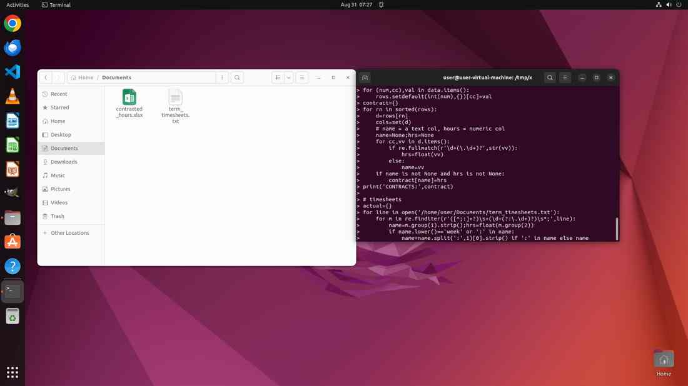
step 16.116 16:27:49
EXECUTED (pyautogui in VM)pyautogui.press("enter")
step 16.117 16:27:52
EXECUTED (pyautogui in VM)pyautogui.typewrite(" actual[name]=actual.get(name,0)+hrs")
step 16.118 16:27:56
EXECUTED (pyautogui in VM)pyautogui.press("enter")
step 16.119 16:27:59
EXECUTED (pyautogui in VM)pyautogui.typewrite("print('ACTUAL:',actual)")
step 16.120 16:28:03
EXECUTED (pyautogui in VM)pyautogui.press("enter")
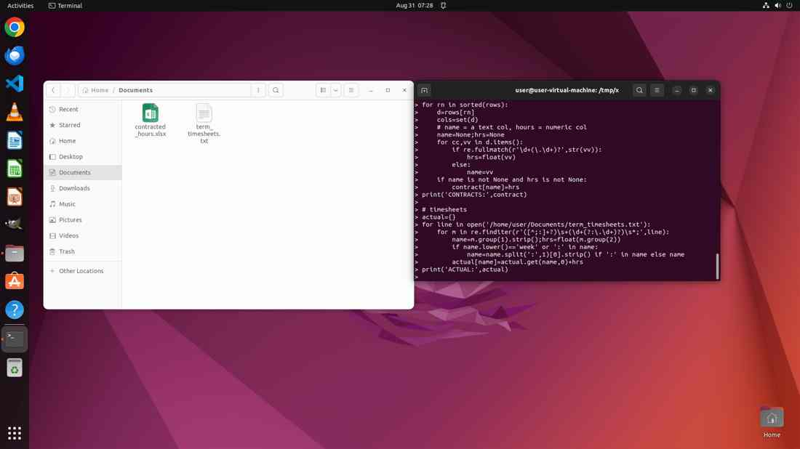
step 16.121 16:28:06
EXECUTED (pyautogui in VM)pyautogui.press("enter")
step 16.122 16:28:10
EXECUTED (pyautogui in VM)pyautogui.typewrite("short={}")
step 16.123 16:28:13
EXECUTED (pyautogui in VM)pyautogui.press("enter")
step 16.124 16:28:17
EXECUTED (pyautogui in VM)pyautogui.typewrite("for name,c in contract.items():")
step 16.125 16:28:20
EXECUTED (pyautogui in VM)pyautogui.press("enter")
step 16.126 16:28:24
EXECUTED (pyautogui in VM)pyautogui.typewrite(" a=actual.get(name,0)")
step 16.127 16:28:27
EXECUTED (pyautogui in VM)pyautogui.press("enter")
step 16.128 16:28:31
EXECUTED (pyautogui in VM)pyautogui.typewrite(" d=c-a")
step 16.129 16:28:34
EXECUTED (pyautogui in VM)pyautogui.press("enter")
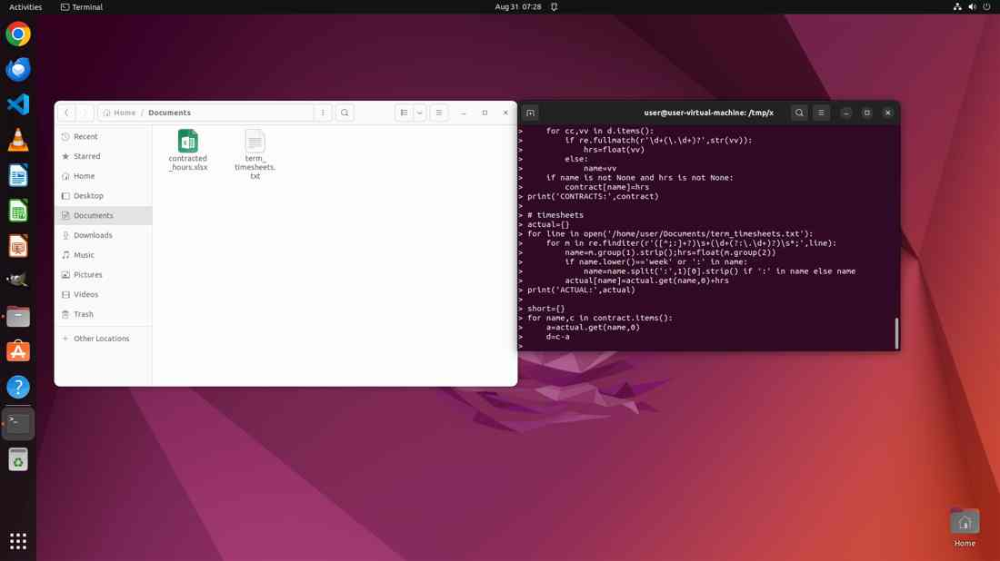
step 16.130 16:28:38
EXECUTED (pyautogui in VM)pyautogui.typewrite(" if d>0:")
step 16.131 16:28:41
EXECUTED (pyautogui in VM)pyautogui.press("enter")
step 16.132 16:28:45
EXECUTED (pyautogui in VM)pyautogui.typewrite(" short[name]=d")
step 16.133 16:28:48
EXECUTED (pyautogui in VM)pyautogui.press("enter")
step 16.134 16:28:52
EXECUTED (pyautogui in VM)pyautogui.typewrite("print('SHORTFALLS:',short)")
step 16.135 16:28:55
EXECUTED (pyautogui in VM)pyautogui.press("enter")
step 16.136 16:28:59
EXECUTED (pyautogui in VM)pyautogui.typewrite("order=sorted(short.items(), key=lambda kv:(-kv[1], kv[0]))")
step 16.137 16:29:02
EXECUTED (pyautogui in VM)pyautogui.press("enter")
step 16.138 16:29:06
EXECUTED (pyautogui in VM)pyautogui.typewrite("with open('/home/user/Documents/shortfall.txt','w') as f:")
step 16.139 16:29:09
EXECUTED (pyautogui in VM)pyautogui.press("enter")
step 16.140 16:29:13
EXECUTED (pyautogui in VM)pyautogui.typewrite(" for name,_ in order:")
step 16.141 16:29:16
EXECUTED (pyautogui in VM)pyautogui.press("enter")
step 16.142 16:29:20
EXECUTED (pyautogui in VM)pyautogui.typewrite(" f.write(name+'\\n')")
step 16.143 16:29:23
EXECUTED (pyautogui in VM)pyautogui.press("enter")
step 16.144 16:29:27
EXECUTED (pyautogui in VM)pyautogui.typewrite("print('WROTE')")
step 16.145 16:29:30
EXECUTED (pyautogui in VM)pyautogui.press("enter")
step 16.146 16:29:34
EXECUTED (pyautogui in VM)pyautogui.typewrite("EOF")
step 16.147 16:29:37
EXECUTED (pyautogui in VM)pyautogui.press("enter")
step 16.148 16:29:41
EXECUTED (pyautogui in VM)pyautogui.typewrite("python3 /tmp/calc.py")
step 17 16:29:53
THINKINGThe heredoc was written and the python3 command is at the prompt but not yet executed. I need to press Enter to run it.
ACTIONThe script is saved. Let me run it.
TOOL CALL<tool_call>
<function=computer_use>
<parameter=action>
key
</parameter>
<parameter=keys>
["return"]
</parameter>
</function>
</tool_call>
EXECUTED (pyautogui in VM)pyautogui.press("return")
step 18.1 16:30:14
THINKINGError: `ValueError: invalid literal for int() with base 10: 'A'` at line 37 `rows.setdefault(int(num),{})`. My `num` variable is ref[0] which is the first character of the reference - that's a column letter (like 'A'), not the row number! I made a mistake: I stored data[(ref[0], col(ref))] but ref[0] is the first char which is a column letter, not row number. I need to extract the row number (digits) from the ref instead.
Let me fix: use a proper row number extraction: re.match(r'(\d+)', ref).group(1). Let me rewrite the relevant part. Rather than rewriting whole script, I'll just fix the key extraction. The bug: `ref[0]` should be the numeric row part. Let me rewrite the whole script cleanly with correct extraction.
ACTIONThere's a bug: I used the first character of the cell reference (a column letter) instead of the row number. Let me rewrite the script with correct row-number extraction.
TOOL CALL<tool_call>
<function=computer_use>
<parameter=action>
type
</parameter>
<parameter=text>
cat > /tmp/calc.py << 'EOF'
import re, xml.etree.ElementTree as ET
ns='{http://schemas.openxmlformats.org/spreadsheetml/2006/main}'
sst=[]
try:
root=ET.parse('/tmp/x/xl/sharedStrings.xml').getroot()
for si in root.findall(ns+'si'):
sst.append(''.join(t.text or '' for t in si.iter(ns+'t')))
except FileNotFoundError:
pass
def colnum(ref): return re.match(r'[A-Z]+',ref).group()
def rownum(ref): return int(re.search(r'\d+',ref).group())
rows={}
sroot=ET.parse('/tmp/x/xl/worksheets/sheet1.xml').getroot()
for c in sroot.iter(ns+'c'):
ref=c.get('r'); rtype=c.get('t')
v=c.find(ns+'v'); val=None
if v is not None:
val = sst[int(v.text)] if rtype=='s' else v.text
else:
is_=c.find(ns+'is')
if is_ is not None:
val=''.join(t.text or '' for t in is_.iter(ns+'t'))
if val is None: continue
rows.setdefault(rownum(ref),{})[colnum(ref)]=val
contract={}
for rn in sorted(rows):
d=rows[rn]; name=None; hrs=None
for cc,vv in d.items():
if re.fullmatch(r'\d+(\.\d+)?',str(vv)): hrs=float(vv)
else: name=vv
if name is not None and hrs is not None: contract[name]=hrs
print('CONTRACTS:',contract)
actual={}
for line in open('/home/user/Documents/term_timesheets.txt'):
for m in re.finditer(r'([A-Za-z].*?)\s(\d+(?:\.\d+)?)\s*;',line):
name=m.group(1).strip(); hrs=float(m.group(2))
actual[name]=actual.get(name,0)+hrs
print('ACTUAL:',actual)
short={n:(c-actual.get(n,0)) for n,c in contract.items() if c-actual.get(n,0)>0}
print('SHORTFALLS:',short)
order=sorted(short.items(), key=lambda kv:(-kv[1],kv[0]))
open('/home/user/Documents/shortfall.txt','w').write(''.join(n+'\n' for n,_ in order))
print('WROTE')
EOF
python3 /tmp/calc.py
</parameter>
</function>
</tool_call>
EXECUTED (pyautogui in VM)pyautogui.typewrite("cat > /tmp/calc.py << 'EOF'")
step 18.2 16:30:17
EXECUTED (pyautogui in VM)pyautogui.press("enter")
step 18.3 16:30:21
EXECUTED (pyautogui in VM)pyautogui.typewrite("import re, xml.etree.ElementTree as ET")
step 18.4 16:30:24
EXECUTED (pyautogui in VM)pyautogui.press("enter")
step 18.5 16:30:28
EXECUTED (pyautogui in VM)pyautogui.typewrite("ns='{http://schemas.openxmlformats.org/spreadsheetml/2006/main}'")
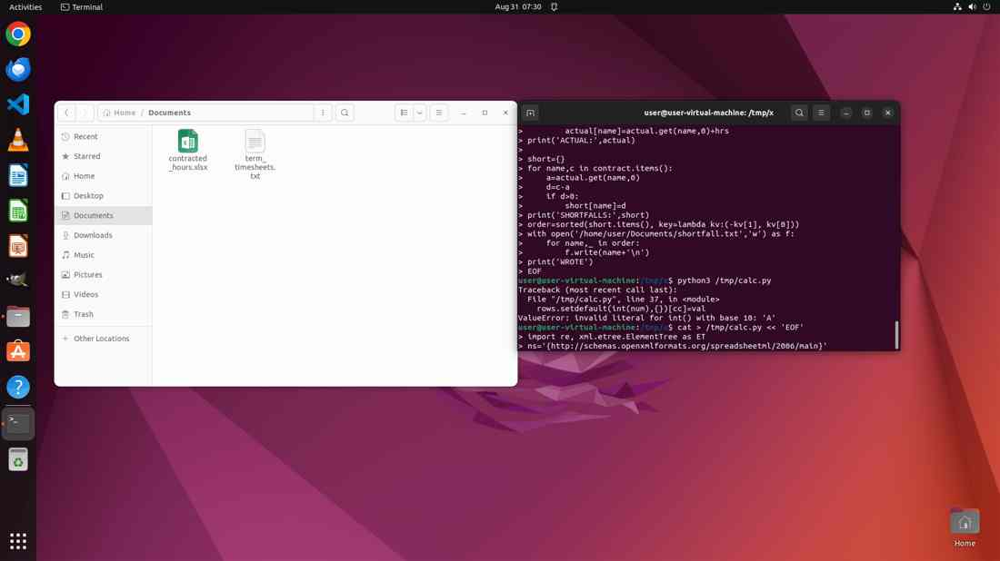
step 18.6 16:30:32
EXECUTED (pyautogui in VM)pyautogui.press("enter")
step 18.7 16:30:35
EXECUTED (pyautogui in VM)pyautogui.typewrite("sst=[]")
step 18.8 16:30:39
EXECUTED (pyautogui in VM)pyautogui.press("enter")
step 18.9 16:30:42
EXECUTED (pyautogui in VM)pyautogui.typewrite("try:")
step 18.10 16:30:46
EXECUTED (pyautogui in VM)pyautogui.press("enter")
step 18.11 16:30:49
EXECUTED (pyautogui in VM)pyautogui.typewrite(" root=ET.parse('/tmp/x/xl/sharedStrings.xml').getroot()")
step 18.12 16:30:53
EXECUTED (pyautogui in VM)pyautogui.press("enter")
step 18.13 16:30:56
EXECUTED (pyautogui in VM)pyautogui.typewrite(" for si in root.findall(ns+'si'):")
step 18.14 16:31:00
EXECUTED (pyautogui in VM)pyautogui.press("enter")
step 18.15 16:31:03
EXECUTED (pyautogui in VM)pyautogui.typewrite(" sst.append(''.join(t.text or '' for t in si.iter(ns+'t')))")
step 18.16 16:31:07
EXECUTED (pyautogui in VM)pyautogui.press("enter")
step 18.17 16:31:11
EXECUTED (pyautogui in VM)pyautogui.typewrite("except FileNotFoundError:")
step 18.18 16:31:14
EXECUTED (pyautogui in VM)pyautogui.press("enter")
step 18.19 16:31:18
EXECUTED (pyautogui in VM)pyautogui.typewrite(" pass")
step 18.20 16:31:21
EXECUTED (pyautogui in VM)pyautogui.press("enter")
step 18.21 16:31:25
EXECUTED (pyautogui in VM)pyautogui.typewrite("def colnum(ref): return re.match(r'[A-Z]+',ref).group()")
step 18.22 16:31:28
EXECUTED (pyautogui in VM)pyautogui.press("enter")
step 18.23 16:31:32
EXECUTED (pyautogui in VM)pyautogui.typewrite("def rownum(ref): return int(re.search(r'\\d+',ref).group())")
step 18.24 16:31:35
EXECUTED (pyautogui in VM)pyautogui.press("enter")
step 18.25 16:31:39
EXECUTED (pyautogui in VM)pyautogui.typewrite("rows={}")
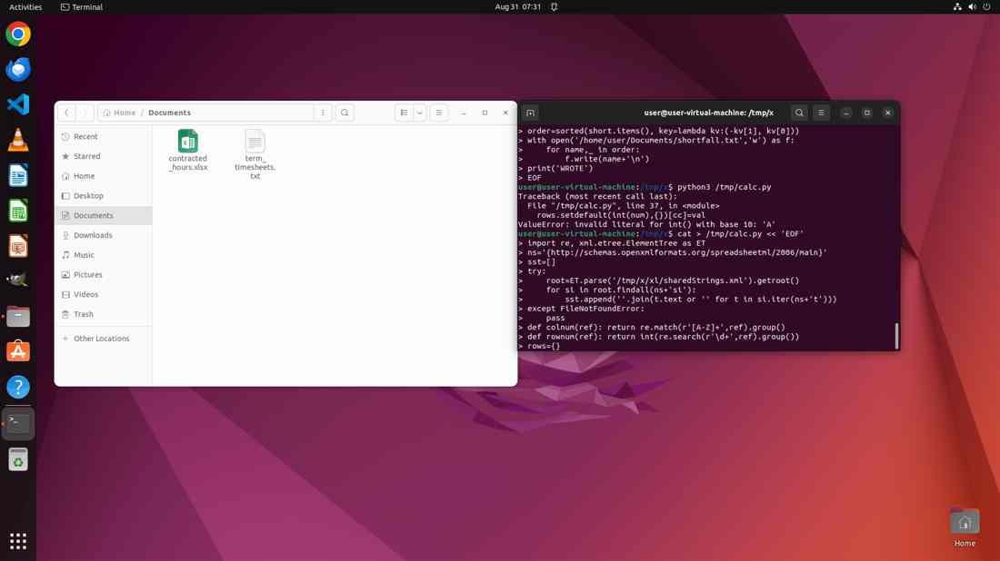
step 18.26 16:31:42
EXECUTED (pyautogui in VM)pyautogui.press("enter")
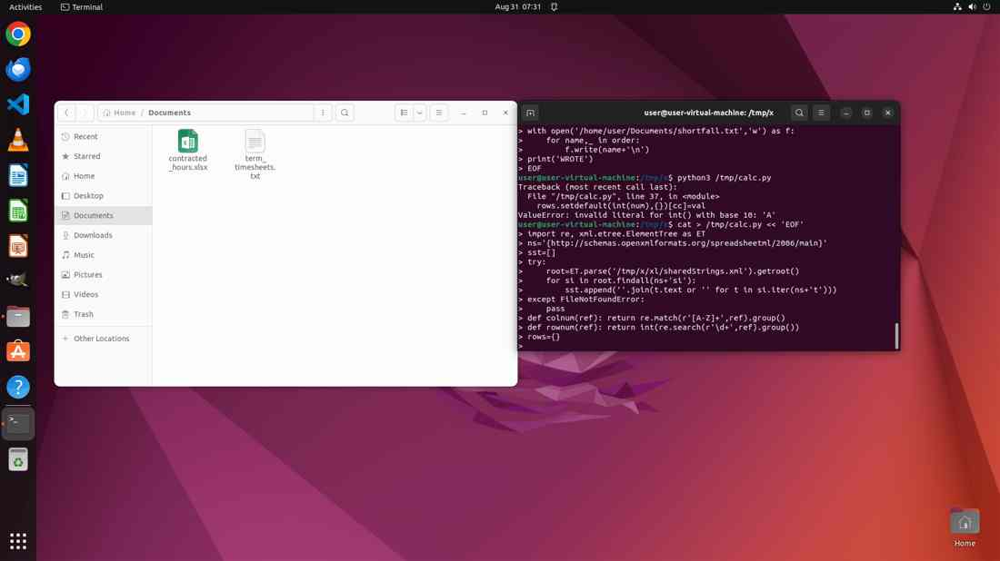
step 18.27 16:31:46
EXECUTED (pyautogui in VM)pyautogui.typewrite("sroot=ET.parse('/tmp/x/xl/worksheets/sheet1.xml').getroot()")
step 18.28 16:31:50
EXECUTED (pyautogui in VM)pyautogui.press("enter")
step 18.29 16:31:53
EXECUTED (pyautogui in VM)pyautogui.typewrite("for c in sroot.iter(ns+'c'):")
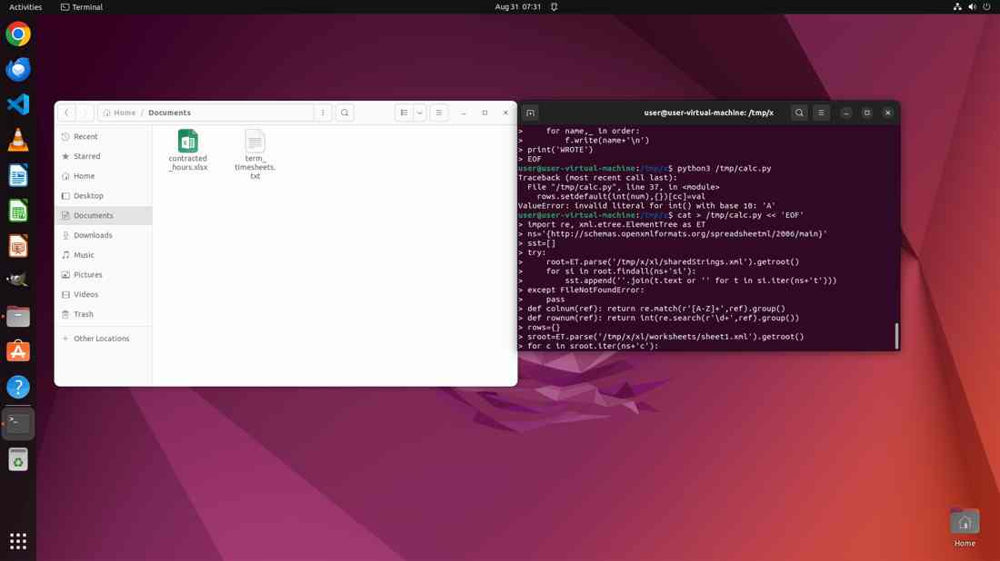
step 18.30 16:31:57
EXECUTED (pyautogui in VM)pyautogui.press("enter")
step 18.31 16:32:00
EXECUTED (pyautogui in VM)pyautogui.typewrite(" ref=c.get('r'); rtype=c.get('t')")
step 18.32 16:32:04
EXECUTED (pyautogui in VM)pyautogui.press("enter")
step 18.33 16:32:07
EXECUTED (pyautogui in VM)pyautogui.typewrite(" v=c.find(ns+'v'); val=None")
step 18.34 16:32:11
EXECUTED (pyautogui in VM)pyautogui.press("enter")
step 18.35 16:32:15
EXECUTED (pyautogui in VM)pyautogui.typewrite(" if v is not None:")
step 18.36 16:32:18
EXECUTED (pyautogui in VM)pyautogui.press("enter")
step 18.37 16:32:22
EXECUTED (pyautogui in VM)pyautogui.typewrite(" val = sst[int(v.text)] if rtype=='s' else v.text")
step 18.38 16:32:25
EXECUTED (pyautogui in VM)pyautogui.press("enter")
step 18.39 16:32:29
EXECUTED (pyautogui in VM)pyautogui.typewrite(" else:")
step 18.40 16:32:32
EXECUTED (pyautogui in VM)pyautogui.press("enter")
step 18.41 16:32:36
EXECUTED (pyautogui in VM)pyautogui.typewrite(" is_=c.find(ns+'is')")
step 18.42 16:32:40
EXECUTED (pyautogui in VM)pyautogui.press("enter")
step 18.43 16:32:44
EXECUTED (pyautogui in VM)pyautogui.typewrite(" if is_ is not None:")
step 18.44 16:32:49
EXECUTED (pyautogui in VM)pyautogui.press("enter")
step 18.45 16:32:53
EXECUTED (pyautogui in VM)pyautogui.typewrite(" val=''.join(t.text or '' for t in is_.iter(ns+'t'))")
step 18.46 16:32:56
EXECUTED (pyautogui in VM)pyautogui.press("enter")
step 18.47 16:33:00
EXECUTED (pyautogui in VM)pyautogui.typewrite(" if val is None: continue")
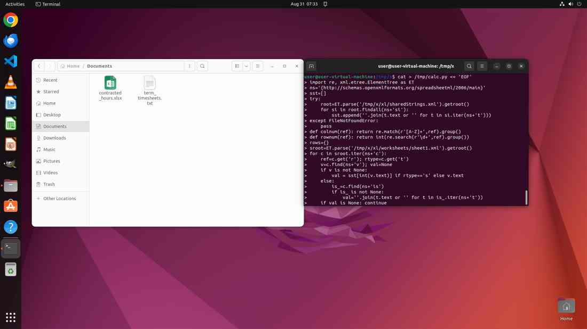
step 18.48 16:33:03
EXECUTED (pyautogui in VM)pyautogui.press("enter")
step 18.49 16:33:07
EXECUTED (pyautogui in VM)pyautogui.typewrite(" rows.setdefault(rownum(ref),{})[colnum(ref)]=val")
step 18.50 16:33:10
EXECUTED (pyautogui in VM)pyautogui.press("enter")
step 18.51 16:33:14
EXECUTED (pyautogui in VM)pyautogui.typewrite("contract={}")
step 18.52 16:33:17
EXECUTED (pyautogui in VM)pyautogui.press("enter")
step 18.53 16:33:21
EXECUTED (pyautogui in VM)pyautogui.typewrite("for rn in sorted(rows):")
step 18.54 16:33:24
EXECUTED (pyautogui in VM)pyautogui.press("enter")
step 18.55 16:33:28
EXECUTED (pyautogui in VM)pyautogui.typewrite(" d=rows[rn]; name=None; hrs=None")
step 18.56 16:33:31
EXECUTED (pyautogui in VM)pyautogui.press("enter")
step 18.57 16:33:35
EXECUTED (pyautogui in VM)pyautogui.typewrite(" for cc,vv in d.items():")
step 18.58 16:33:38
EXECUTED (pyautogui in VM)pyautogui.press("enter")
step 18.59 16:33:42
EXECUTED (pyautogui in VM)pyautogui.typewrite(" if re.fullmatch(r'\\d+(\\.\\d+)?',str(vv)): hrs=float(vv)")
step 18.60 16:33:45
EXECUTED (pyautogui in VM)pyautogui.press("enter")
step 18.61 16:33:49
EXECUTED (pyautogui in VM)pyautogui.typewrite(" else: name=vv")
step 18.62 16:33:52
EXECUTED (pyautogui in VM)pyautogui.press("enter")
step 18.63 16:33:56
EXECUTED (pyautogui in VM)pyautogui.typewrite(" if name is not None and hrs is not None: contract[name]=hrs")
step None
EXECUTED (pyautogui in VM)None